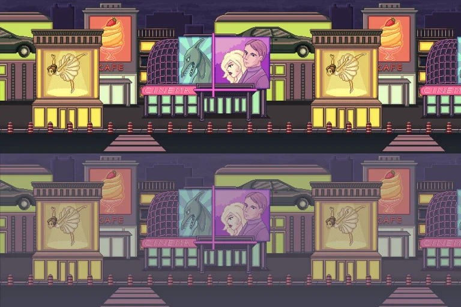

// image from itch.io https://edermunizz.itch.io/free-pixel-art-forest

// how to add audio to page https://noaheakin.medium.com/adding-sound-to-your-js-web-app-f6a0ca728984#:~:text=The%20simplest%20way%20to%20add,starts%20playing%20the%20current%20audio.